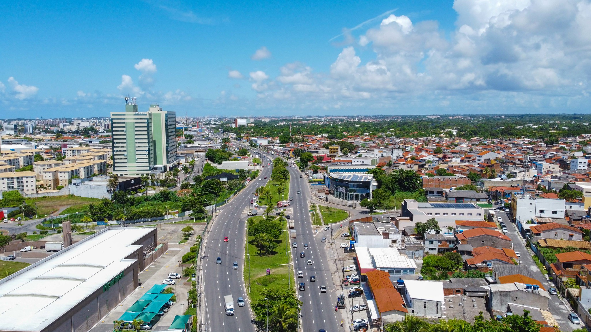

Endereço: Praça Martiniano Maia, 53 - Centro, Lauro de Freitas - BA, 42700-000
Telefone: (71) 3378-1646
Endereço: R. Miguel Santos Silva, 5 - Centro, Lauro de Freitas - BA, 42700-000
Telefone: (71) 3051-3667
Endereço: R. Maria Isabel dos Santos, 38 - Jardim do Jockey, Lauro de Freitas - BA, 42700-000
Telefone: (71) 3288-4048